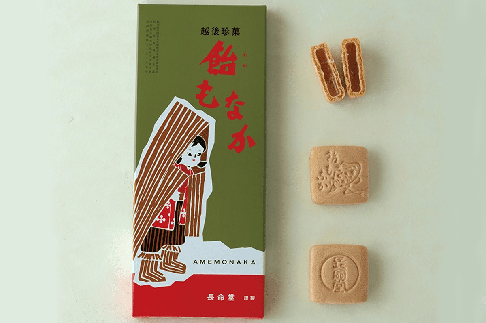
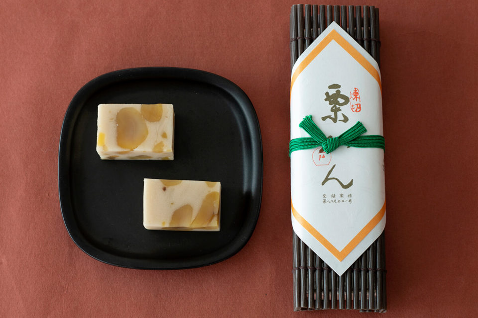
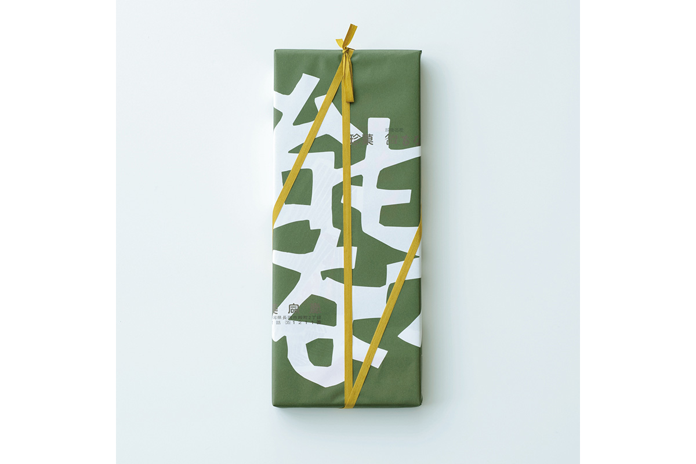
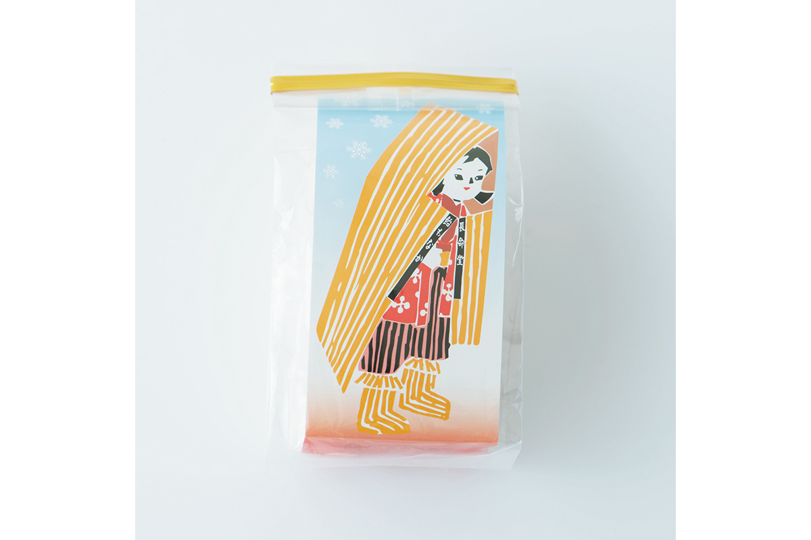

Префектура Ниигата · Ниигата и Нагаока · сладости
Сладости Ниигаты в духе мингэй: каштановый «Курикан» и «Амэ-монака» в снежной упаковке

У японских сладостей и народного ремесла мингэй давняя дружба: кондитерские не только покупали рекламу в журнале движения, но и заказывали ремесленникам упаковку и посуду. В Ниигате две такие кондитерские работают до сих пор.
Мингэй
Сладости, которые кормили журнал
Японская ассоциация мингэй, народного ремесла, с 1952 года выпускает свой журнал «Мингэй». В 2019 году он перевалил за 800 номеров, и его называют долгожителем среди журналов. Как и любое издание, он держался не только на читателях, но и на рекламе.
Многие годы место в журнале покупали те, кто разделял идеи движения: магазины народных ремёсел, рестораны и кондитерские. Связь на рекламе не заканчивалась. Интерьеры, посуду и упаковку они заказывали мастерам мингэй, и поэтому у многих старых сладостей до сих пор узнаваемый ремесленный облик.
Ниигата
«Курикан»: каштаны в нежной белой пасте
Кондитерская «Сатосэн» в городе Ниигата, административном центре префектуры, давала рекламу своего «Курикана» в «Мингэй» уже в конце 1960-х и в начале 1970-х годов. Исследовательница сладостей, рассказавшая об этих двух местах, вспоминает, что подростком видела эту рекламу и мечтала попробовать, а попробовала, только когда выросла. Даже надпись с названием на старой рекламе нарисована в духе мингэй, и уже по буквам кажется, что это вкусно.
«Курикан» делают только с осени до весны. Это не обычный каштановый ёкан, а брусок из белой бобовой пасты, которую готовят так же, как нэрикири для изысканных чайных сладостей. В пасту щедро добавляют каштаны, сваренные в сиропе. Такой гладкости у ёкана не бывает: «Курикан» тает на языке, и вкус у него превосходный.

«Сатосэн»
- Адрес
- префектура Ниигата, Ниигата, район Тюо, Фурумати-дори 13-бантё, 2850-1
- Телефон
- +81 25-228-9234
- Часы работы
- 8:30–18:00
- Выходные
- 1 января
- Сайт
- satosen.net
Нагаока
«Амэ-монака»: патока под снежной девочкой
Среди знаменитых сладостей Нагаоки, большого города в центре префектуры, «Амэ-монака» кондитерской «Тёмэйдо амэхо» выделяется необычностью. Дом основан в 1912 году, и, по преданию, его основатель два года добивался нужного вкуса. Внутри хрустящих поджаренных вафельных створок монака не бобовая паста, а густая прозрачная патока. Вкус у неё лёгкий, не приторный, и сочетание кажется неожиданно свежим.

С точки зрения мингэй главное здесь упаковка. На ней нарисована девочка в соломенной шапке и соломенных сапожках: в области Этиго, старом названии Ниигаты, таких детей зовут «юкинко», снежными малышами. Под соломой у неё красная стёганая безрукавка и полосатые штаны момпэ, образцовый деревенский наряд.

Соломенную зимнюю одежду снежных краёв хранят во многих музеях народного ремесла как красивые и продуманные вещи. Но в быту её давно вытеснили пальто, пуховики и резиновые сапоги, и встретить её на коробке местной сладости особенно приятно. Зимний пейзаж на коробке выглядит прохладно, поэтому «Амэ-монака» хорошо подходит как подарок в разгар лета. Солодовая патока к тому же питательна, и от неё ждут и помощи при летней усталости.
«Тёмэйдо амэхо»
- Адрес
- префектура Ниигата, Нагаока, Тономати, 2-1-2
- Телефон
- +81 258-35-1211
- Часы работы
- 9:00–17:00
- Выходные
- воскресенье
- Сайт
- amemonaka.jp
Фото: Вакана Баба.